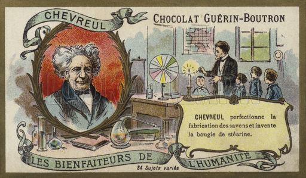

Candles have been used for light and to illuminate man's celebrations for more than 5,000 years, yet little is known about their origin. It is often written that the first candles were developed by the Ancient Egyptians, who used rushlights or torches made by soaking the pithy core of reeds in melted animal fat. However, the rushlights had no wick like a true candle.
The Egyptians were using wicked candles in 3,000 B.C., but the ancient Romans are generally credited with developing the wicked candle before that time by dipping rolled papyrus repeatedly in melted tallow or beeswax. The resulting candles were used to light their homes, to aid travelers at night, and in religious ceremonies. Historians have found evidence that many other early civilizations developed wicked candles using waxes made from available plants and insects. Early Chinese candles are said to have been molded in paper tubes, using rolled rice paper for the wick, and wax from an indigenous insect that was combined with seeds. In Japan, candles were made of wax extracted from tree nuts, while in India, candle wax was made by boiling the fruit of the cinnamon tree. It is also known that candles played an important role in early religious ceremonies. Hanukkah, the Jewish Festival of Lights which centers on the lighting of candles, dates back to 165 B.C. There are several Biblical references to candles, and the Emperor Constantine is reported to have called for the use of candles during an Easter service in the 4th century.
Most early Western cultures relied primarily on candles rendered from animal fat (tallow). A major improvement came in the Middle Ages, when beeswax candles were introduced in Europe. Unlike animal-based tallow, beeswax burned pure and cleanly, without producing a smoky flame. It also emitted a pleasant sweet smell rather than the foul, acrid odor of tallow. Beeswax candles were widely used for church ceremonies, but because they were expensive, few individuals other than the wealthy could afford to burn them in the home. Tallow candles were the common household candle for Europeans, and by the 13th century, candlemaking had become a guild craft in England and France. The candlemakers (chandlers) went from house to house making candles from the kitchen fats saved for that purpose, or made and sold their own candles from small candle shops.
Colonial women offered America’s first contribution to candlemaking, when they discovered that boiling the grayish-green berries of bayberry bushes produced a sweet-smelling wax that burned cleanly. However, extracting the wax from the bayberries was extremely tedious. As a result, the popularity of bayberry candles soon diminished. The growth of the whaling industry in the late 18th century brought the first major change in candlemaking since the Middle Ages, when spermaceti — a wax obtained by crystallizing sperm whale oil — became available in quantity. Like beeswax, the spermaceti wax did not elicit a repugnant odor when burned, and produced a significantly brighter light. It also was harder than either tallow or beeswax, so it wouldn’t soften or bend in the summer heat. Historians note that the first “standard candles” were made from spermaceti wax.
Most of the major developments impacting contemporary candlemaking occurred during the 19th century. In the 1820s, French chemist Michel Eugene Chevreul discovered how to extract stearic acid from animal fatty acids. This led to the development of stearin wax, which was hard, durable and burned cleanly. Stearin candles remain popular in Europe today. In 1834, inventor Joseph Morgan helped to further the modern-day candle industry by developing a machine that allowed for continuous production of molded candles by using a cylinder with a movable piston to eject candles as they solidified. With the introduction of mechanized production, candles became an easily affordable commodity for the masses. Paraffin wax was introduced in the 1850s, after chemists learned how to efficiently separate the naturally-occurring waxy substance from petroleum and refine it. Odorless and bluish-white in color, paraffin was a boon to candlemaking because it burned cleanly, consistently and was more economical to produce than any other candle fuel. Its only disadvantage was a low melting point. This was soon overcome by adding the harder stearic acid, which had become widely available. With the introduction of the light bulb in 1879, candlemaking began to decline.
Candles enjoyed renewed popularity during the first half of the 20th century, when the growth of U.S. oil and meatpacking industries brought an increase in the byproducts that had become the basic ingredients of candles – paraffin and stearic acid.  The popularity of candles remained steady until the mid-1980s, when interest in candles as decorative items, mood-setters and gifts began to increase notably. Candles were suddenly available in a broad array of sizes, shapes and colors, and consumer interest in scented candles began to escalate. The 1990s witnessed an unprecedented surge in the popularity of candles, and for the first time in more than a century, new types of candle waxes were being developed. In the U.S., agricultural chemists began to develop soybean wax, a softer and slower burning wax than paraffin. On the other side of the globe, efforts were underway to develop palm wax for use in candles.